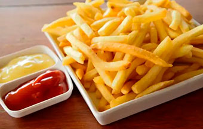

Papas Fritas
Receta de papas fritas caseras

Ingredientes
3 o 4 papas (300gr)
Aceite
Sal
Elaboración (Pasos)
Pelar las papas
Cortalas en bastón
Calentar aceite en una sarten
Cocinar hasta que esten doradas
Removerlas del aceite y salar a gusto